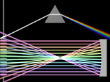

{kind=link}

A library module from the Persistence of Vision Raytracer (POV-Ray) Object Collection.
 Sometimes, it is desirable to know the behavior of light refracting through or reflecting off a transparent or specular object before incorporating the object into a scene. Examples could be a gem cut or a lens system. BeamTest provides for optical testing of such objects by shooting beams of light at two-dimensional slices of objects.
| Key Files | |
|---|---|
| File | Description |
beamtest.html | The user manual (this document) |
beamtest.inc | The BeamTest software |
beamtest.jpg | Sample output |
beamtest.pov | A demonstration scene file |
READMEnnnnnn.html |
Important information that you need to know |
| Other Files | |
| File | Description |
beamtest.css | A support file for the user manual |
beamtest_cc-lgpl.png | A support file for the user manual |
beamtest_description.txt | A brief description of BeamTest |
beamtest_keywords.txt | A list of keywords |
beamtest_prereqs.txt | Prerequisites (empty file) |
beamtest_thumbnail.png | Sample output |
cc-LGPL-a.png | Administrative support file |
Versionnnnnnn.js |
Administrative support file |
Include this file once prior to using any of the macros:
#include "beamtest.inc"
Including the file more than once is harmless, though unnecessary.
A camera is set up automatically.
Light fixtures are arrayed along the left side of the image. The user chooses the height, aiming, and color of the lights.
The objects to be tested should be placed on the right (x > 0), with the slice to be tested along the x-y plane. All tested objects must be declared as a photons { target }; in addition, refractive objects must be declared hollow.
Requires POV-Ray version 3.6 or later. POV-Ray version 3.7 or later is recommended for the most accurate dispersion.
All file names in this module and all global and local identifiers defined in beamtest.inc comply with the Object Collection revised naming standards. The prefixes for this module are “beamtest” and “beam,” including any uppercase and lowercase variations.
The following parameters may be modified by declaring them prior to including beamtest.inc.
| Parameter | Description | Default |
|---|---|---|
Beam_extinction |
Scattering extinction of the environmental media. This value may need to be increased if Beam_image_depth is increased. A practical maximum appears to be 0.1. |
0.0 |
Beam_field_of_view |
Camera angle, in degrees | 15.0 |
Beam_fixture_length |
Length of each light fixture, in POV units | 0.6 |
Beam_fixture_radius |
Radius of each light fixture, in POV units | 0.1 |
Beam_fixture_shadow |
Whether or not the light fixtures cast shadows. Set this parameter to no if the fixtures interfere with the light beams. |
yes |
Beam_fixture_x |
Horizontal position of the light fixtures | -5.0 |
Beam_image_depth |
Depth (in the z-direction) of the environmental media, in POV units. Set a large value if a test object deflects light outside the x-y plane. (Warning: This may slow render times and oversaturate deflected light beams.) | Slightly more than twice Beam_radius |
Beam_image_width |
Width of the image, in POV units | 32/3 |
Beam_max_trace |
Maximum trace level | 15 |
Beam_photons |
|
0.005 |
Beam_photons_media |
Media photons max steps | 200 |
Beam_radius |
Radius of each light beam, including the falloff, in POV units | 0.05 |
Beam_umbra |
The width of the bright core of each light beam, i.e., without the falloff, as a fraction of the total diameter | 0.5 |
A light beam with fixture, aimed by angle.
Height:
Color:
Angle:
A light beam with fixture, aimed by mathematical slope.
Height:
Color:
Slope:
A light beam with fixture, aimed at a target point.
Height:
Color:
Target:
| Identifier | Type | Description |
|---|---|---|
Beam_media |
media | The media used for the test environment |
Any identifiers not documented in this manual are subject to change or elimination in a future update.
| Version | Date | Notes |
|---|---|---|
| n/a | November 21, 2007 | Software is created. |
| 1.0 | July 30, 2008 | Software is adapted for the Object Collection. |
| 1.0.1 | August 4, 2008 | User manual is edited; software is unmodified. |
| 1.1 | September 1, 2008 | Namespace compliance is extended to local identifiers. |
| 1.1.1 | June 30, 2012 | Demo scene is re-rendered using POV-Ray 3.7. |
Many thanks to Warp (who will recognize his parabolic mirror) and to Blue Herring.